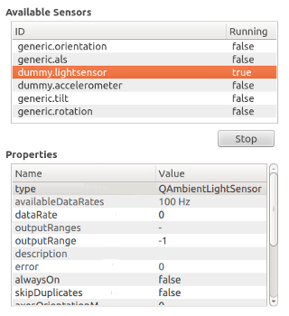

Qt Sensors - Explorer QML Example
Demonstrates how to read the meta-data of available sensors.

This example is divided into two parts:
- A C++ plugin that provides QML alternatives for
QSensorExplorer,QPropertyInfoandQSensorItemC++ classes. - A QML Application that uses the QML types to read the sensor meta-data and present it.
This example is built as an executable with C++ code that runs the QML, but it can also be launched directly using the qmlscene tool. You should build the top-level sensor_explorer project before trying to run this example or it will not be able to find its dependencies.
qmlscene -I . sensor_explorer.qml
Above, the -I . parameter adds the current directory as a module import path to locate the Explorer QML module.
Sensor Explorer QML Import
The Sensor Explorer QML import defines the Explorer QML module, exporting QSensorExplorer, QPropertyInfo and QSensorItem C++ classes as QML types. The source code is available in the sensor_explorer/import subdirectory.
Sensor Explorer QML Application
To write a QML application that will use the QML types exposed by the Explorer module, following steps are needed:
Import the Explorer 1.0 declarative plugin:
import Explorer 1.0
Create a SensorExplorer QML item:
SensorExplorer { id: explorer }
You can retrieve a list of all available sensors using SensorExplorer.availableSensors:
model: explorer.availableSensors
The example uses the returned list as a model to populate a view of available sensors.
To retrieve the properties of a sensor, use SensorItem.properties:
propertyList.model = explorer.selectedSensorItem.properties
The property list is used as a model for another view that displays the property names and values.
It is possible to edit the values of certain sensor properties. Selecting a writable property value will open an editor. SensorExplorer QML type allows you to pass a new value for a sensor property value as follows:
explorer.selectedSensorItem.changePropertyValue(propertyList.selectedItem, loaderEditor.item.text);
Starting and stopping a sensor can be done by setting the SensorItem.start property:
if (text === "Start") { explorer.selectedSensorItem.start = true; text = "Stop"; } else { explorer.selectedSensorItem.start = false; text = "Start"; }